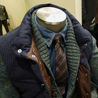

У природы нет плохой погоды, и это действительно так, если ваша мужская верхняя одежда соответствует сезону. В чем заключаются особенности мужской верхней одежды, как правильно выбрать пальто и с чем носить ту или иную вещь? В выборе верхней одежды стилисты рекомендуют мужчинам придерживаться трех основных правил: стиль, минимализм и темные тона. Современный дизайн, разнообразие тканей и моделей позволяют подобрать идеальный вариант для любой погоды

Я решил разделить верхную одежду на две категории: Куртки - для холодного времени года и Рубашки - для теплого